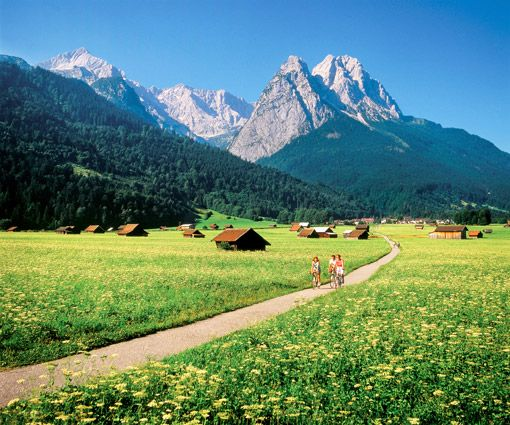
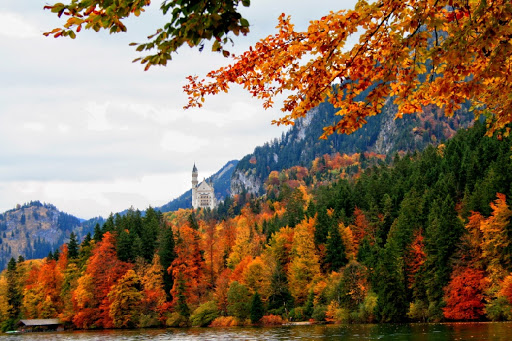

Spring in Germany

Temperatures slowly rise from the mid 40s to high 60s, and the cherry blossoms and longer days seem to brighten everyone's attitude. These pink flowers are most notable in the cities of Bonn and Berlin, though they can be enjoyed around the country. You can also expect a spate of spring festivals this time of year. One of the largest is in Stuttgart, but almost every city has a festival with rides, beer, and live music.
What to pack?
Spring may arrive hesitantly, so be prepared for late flurries of snow through March with slip-proof boots, a scarf, hat, gloves, and a warm jacket. However, the weather may also surprise you with warm days; wear layers so you can strip down to a T-shirt, and don't forget to pack sunglasses.
Summer in Germany

Germans eagerly look forward to summer with its many business closures, non-stop festivals, and warm weather. A few days may top 100 degrees Fahrenheit, but most days hover in the mid 70s, with a high chance of passing precipitation and thunderstorms. It is usually warmest in the south of Germany; the Palatinate wine region in the southwest is blessed with a Mediterranean climate, so exotic fruits like figs, lemons, and kiwis grow. Plan to party at Berlin's Karneval der Kulturen parade and festival, feel the pride at the city's CSD events, and enjoy the beloved summer activities of swim and chill.
What to pack?
Even though reported summer temperatures appear mild, it can feel much hotter as few places offer air conditioning. Pack your favorite summer shorts or skirt, a shirt, fan, sunhat, and good sandals or shoes to walk in. Pack your swimsuit to enjoy the best of Germany's swimming pools and beach bars (or skip the suit like a local). Note that the weather can turn quickly, so it is best to carry a lightweight sweater or jacket and an umbrella.
Fall in Germany

While warm weather usually continues into September, the country begins to experience a chill in the air as temperatures hit 50 degrees Fahrenheit in October. None of this matters for the biggest event of the year, Oktoberfest, which begins in late September to October—rain or shine. Colorful fall foliage is a sight to behold, but by November it can be positively cold, and an early snow might sneak in before it is officially winter.
What to pack?
The cooler days mean you need to transition back to long pants and sleeves, and maybe add on a scarf and jacket. Bring shoes that can handle a long walk and a rainy day.
Winter in Germany
Temperatures in Germany can drop very low in winter, although most days stay between 25 to 40 degrees Fahrenheit. Chilly temps and snowfall in places like the Alps are great for winter sports like skiing and ice skating. However, some years yield little to no snow. People find warmth in the many Christmas markets and beloved Christmas traditions.
What to pack?
Proper winter gear is required, including a heavy jacket, hat, scarves, gloves, long johns or tights, and long pants. Prepare for icy conditions by packing slip-proof boots.